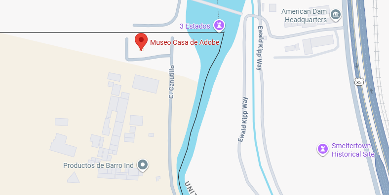
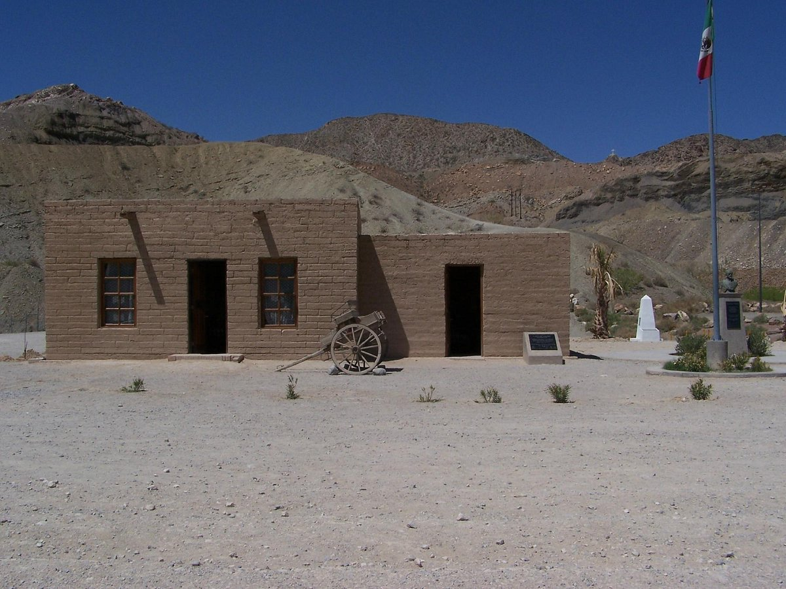
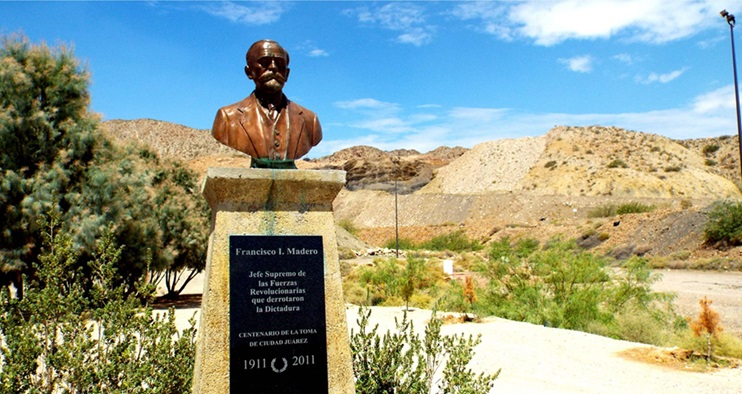
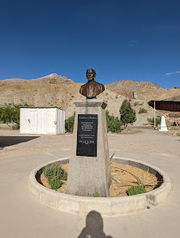
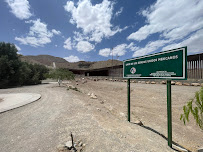

Ubicación
Casa de Adobe, Canutillo, Ladrillera de Juárez, Ciudad Juárez, Chihuahua, México
Haz clic en la imagen para ver la ubicación en Google Maps
Descripción
La Casa de Adobe se encuentra aproximadamente a siete kilómetros de la Plaza de Armas de Ciudad Juárez. Es una réplica exacta del edificio que sirvió como Presidencia Provisional de Francisco I. Madero durante la Revolución, construido en el sitio de la casa original de 1911, conocida como el Rancho de las Flores.
Para llegar, se atraviesan zonas con calles sin pavimento y terrenos difíciles, lo que refleja la geografía histórica de la frontera. El lugar conserva la historia de los revolucionarios y muestra cómo las comunicaciones, como el teléfono de Madero, operaban entre México y Estados Unidos.
Galería de imágenes


